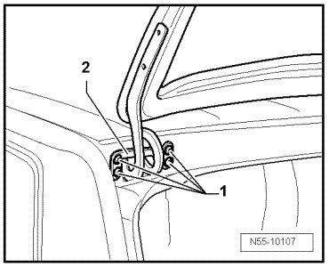
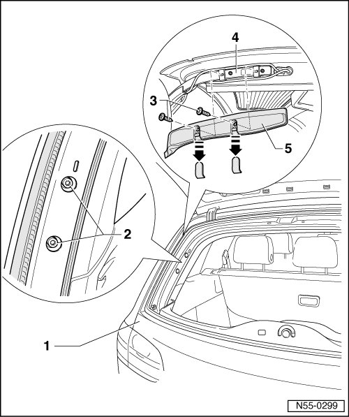
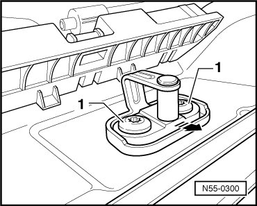

Rear Lid, Adjusting
Rear Lid
Rear Lid, Adjusting
• Vehicle must be on ground to adjust rear lid.
• Lid lock is bolted directly to the rear lid. It does not have longitudinal holes and therefore cannot be adjusted.
• Adjustment stops named in other vehicles are not installed on the Touareg. The rear lid has a guide wedges for stabilizing and cushioning.
• The rear lid is properly adjusted when there is an overall even gap dimension when closed, it is not too far inward or outward and contours align.
The adjustment of the rear lid is described in multiple steps.
To adjust or check the gap dimensions, use adjustment gauge (3371).
- Adjust the rear lid at the hinge..
- Adjust the rear lid and hinge.
- Adjust Striker pin.
- Adjust guide wedge and guide pin, refer to --> [ Guide Wedge and Guide Pin, Adjusting ] Guide Wedge and Guide Pin, Adjusting
Rear Lid and Hinge, Adjusting
• The height of the rear lid can be adjusted at the hinges, if the adjustment range of the rear lid connection is not at its limits.
- Guide wedge and guide pin must be loosened, refer to --> [ Guide Wedge and Guide Pin, Adjusting ] Guide Wedge and Guide Pin, Adjusting
- Loosen bolts - 1 - of lid hinge - 2 - (do not unscrew completely).

- Adjust the rear lid height evenly corresponding to the outer contours.
- Tighten the screws - 1 - after adjusting the rear lid.
Tightening specification: Bolts - 1 - 25 Nm
- Adjust guide wedges and guide pin, refer to --> [ Guide Wedge and Guide Pin, Adjusting ] Guide Wedge and Guide Pin, Adjusting
- Adjusting striker pin
Rear Lid, Adjusting on Hinge

- Open hood.
- Remove window frame trim.
- Guide wedge and guide pin must be loosened. Refer to --> [ Guide Wedge and Guide Pin, Adjusting ] Guide Wedge and Guide Pin, Adjusting
- Loosen bolts - 2 - of lid - 1 - (do not unscrew completely).
- Adjust rear lid height evenly corresponding to the left and right outer contours.
- Tighten the screws - 2 - after adjusting the rear lid.
Tightening specification: Bolts - 2 - 25 Nm
- Adjust guide wedges and guide pin. Refer to --> [ Guide Wedge and Guide Pin, Adjusting ] Guide Wedge and Guide Pin, Adjusting
- Adjust striker pin.
If height adjustment is insufficient: Adjust the rear lid and hinge.
Striker Pin, Adjusting
• Adjustment of striker pin with closing assist is performed accordingly.
• The rear lid is adjusted.
- Remove the lock carrier cover.

- Guide wedge and guide pin must be loosened. Refer to --> [ Guide Wedge and Guide Pin, Adjusting ] Guide Wedge and Guide Pin, Adjusting
- Disengage the striker pin with bolts - 1 -.
- Bring striker pin into rear position - direction of arrow - and tighten bolts - 1 -.
- Close rear lid and check adjustment.
- Striker pin can be slid in oversized holes by loosening bolts - 1 -.
- Tighten the bolts - 1 - after adjusting.
- Tightening specification: 25 Nm
- Adjust guide wedges and guide pin. Refer to --> [ Guide Wedge and Guide Pin, Adjusting ] Guide Wedge and Guide Pin, Adjusting